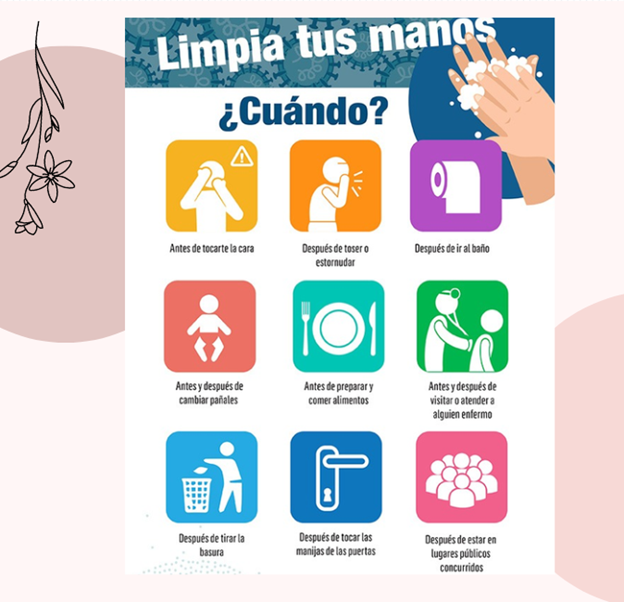
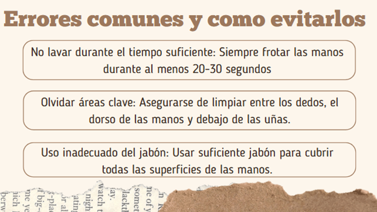

Contextos Específicos
Introducción
El lavado de manos se debe adaptar a diferentes contestos, como antes de comer, después de usar el baño y en situaciones de atención médica, este módulo explorara las variaciones en la técnica y frecuencia del lavado de manos según el contexto.
Identificar las situaciones específicas en las que es importante lavarse las manos.



Objetivo
Importancia del lavado de manos en diferentes contextos.
Actividad Evaluadora
Prueba tus conocimientos sobre la higiene alimentaria en el hogar con este juego interactivo en Educaplay

Galería de Imágenes


Comentarios
Deja tus comentarios, envíanos tus recomendaciones por correo electrónico.
© 2024. Todos los derechos reservados.
Desarrollado por: Estudiantes ITSQMET